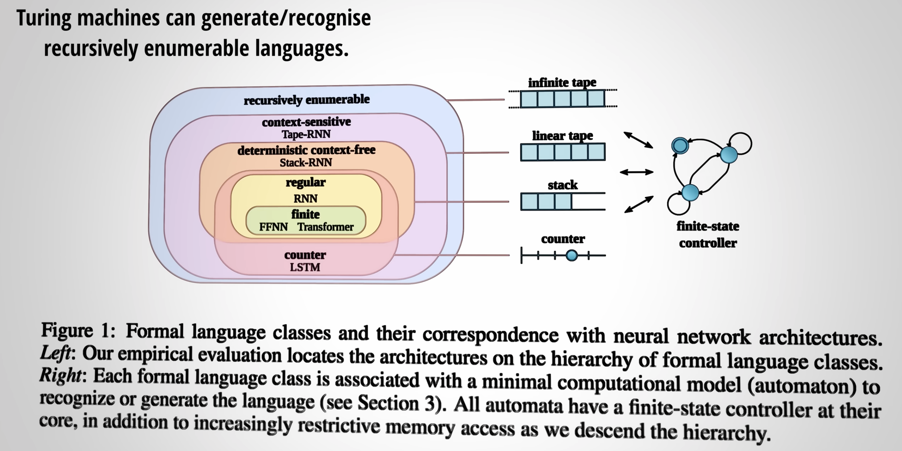

A bachelor's degree. My bio from 2013
It is amazing what deep learning can do. Different neural network architectures seem to correspond to different types of machines. What is tensor algebra?

The above image comes from the video at 38:38.
Concepts such as "Machine learning solves the knowledge acquisition bottleneck problem", and "Probabilistic reasoning addresses the brittleness problem". What are kernal machines and graphical models?
I prefer to study textbooks that cover breadth like Russell & Norvig so that I can relate my functional programming experience and my questions for self reflection:
1. How do we know that we understand?
2. Is there an irreducibility between the evolution of the human mind, computers, and computer programs?
3. Different domain knowledge are our different angles reflecting truth about the world. If there are so many angles, which one is better or is there a best one?
By "better," I mean one that helps us to understand when to use which angle. Or is there a better definition of "better angle" than mine?
By "best," I mean one that allows us to avoid even worrying about "which one is better?"
Calculus, discrete maths, probability theory and statistics, linear algebra.
Laws, economics, business, societies, etc.
Physics, biology, the brain, psychology.
operating systems, networks, database, computer orgranization, etc.